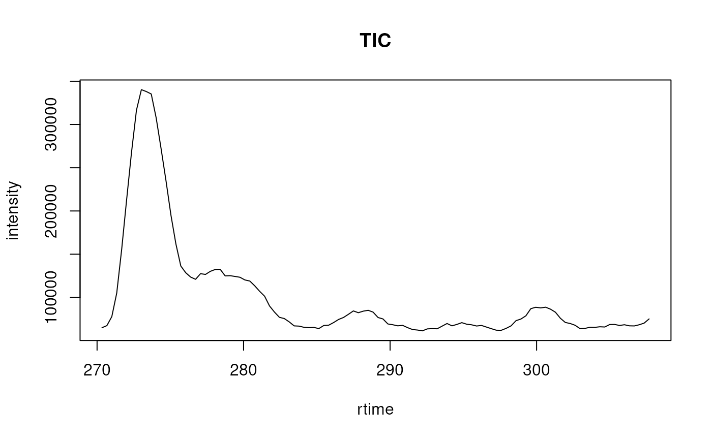
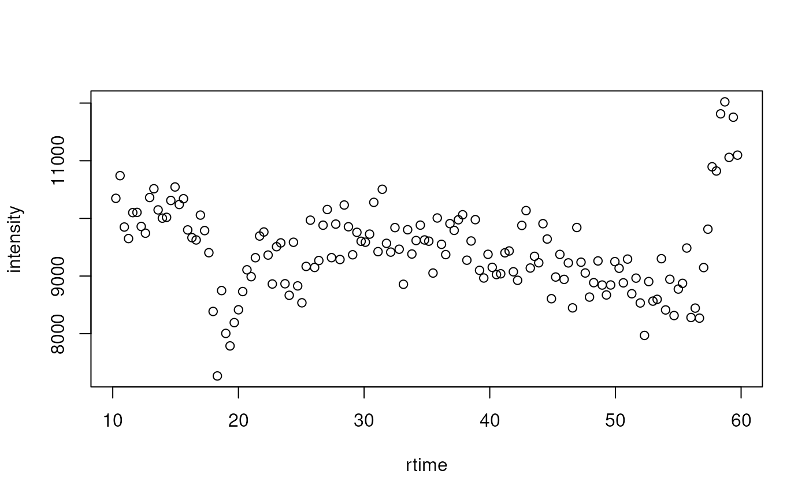

The chromatogram method extracts chromatogram(s) from an
MSnExp or OnDiskMSnExp object.
Depending on the provided parameters this can be a total ion chromatogram
(TIC), a base peak chromatogram (BPC) or an extracted ion chromatogram
(XIC) extracted from each sample/file.
Usage
# S4 method for class 'MSnExp'
chromatogram(
object,
rt,
mz,
aggregationFun = "sum",
missing = NA_real_,
msLevel = 1L,
BPPARAM = bpparam()
)Arguments
- object
For
chromatogram: aMSnExporOnDiskMSnExpobject from which the chromatogram should be extracted.- rt
A
numeric(2)or two-columnmatrixdefining the lower and upper boundary for the retention time range/window(s) for the chromatogram(s). If amatrixis provided, a chromatogram is extracted for each row. If not specified, a chromatogram representing the full retention time range is extracted. See examples below for details.- mz
A
numeric(2)or two-columnmatrixdefining the mass-to-charge (mz) range(s) for the chromatogram(s). For each spectrum/retention time, all intensity values within this mz range are aggregated to result in the intensity value for the spectrum/retention time. If not specified, the full mz range is considered. See examples below for details.- aggregationFun
characterdefining the function to be used for intensity value aggregation along the mz dimension. Allowed values are"sum"(TIC),"max"(BPC),"min"and"mean".- missing
numeric(1)allowing to specify the intensity value for if for a given retention time (spectrum) no signal was measured within the mz range. Defaults toNA_real_.- msLevel
integerspecifying the MS level from which the chromatogram should be extracted. Defaults tomsLevel = 1L.- BPPARAM
Parallelisation backend to be used, which will depend on the architecture. Default is
BiocParallel::bpparam().
Value
chromatogram returns a MChromatograms object with
the number of columns corresponding to the number of files in
object and number of rows the number of specified ranges (i.e.
number of rows of matrices provided with arguments mz and/or
rt). The featureData of the returned object contains columns
"mzmin" and "mzmax" with the values from input argument
mz (if used) and "rtmin" and "rtmax" if the input
argument rt was used.
Details
Arguments rt and mz allow to specify the MS
data slice from which the chromatogram should be extracted.
The parameter aggregationSum allows to specify the function to be
used to aggregate the intensities across the mz range for the same
retention time. Setting aggregationFun = "sum" would e.g. allow
to calculate the total ion chromatogram (TIC),
aggregationFun = "max" the base peak chromatogram (BPC).
The length of the extracted Chromatogram object,
i.e. the number of available data points, corresponds to the number of
scans/spectra measured in the specified retention time range. If in a
specific scan (for a give retention time) no signal was measured in the
specified mz range, a NA_real_ is reported as intensity for the
retention time (see Notes for more information). This can be changed
using the missing parameter.
By default or if \code{mz} and/or \code{rt} are numeric vectors, the
function extracts one \code{\link{Chromatogram}} object for each file
in the \code{\linkS4class{MSnExp}} or \code{\linkS4class{OnDiskMSnExp}}
object. Providing a numeric matrix with argument \code{mz} or \code{rt}
enables to extract multiple chromatograms per file, one for each row in
the matrix. If the number of columns of \code{mz} or \code{rt} are not
equal to 2, \code{range} is called on each row of the matrix.See also
Chromatogram and MChromatograms for the
classes that represent single and multiple chromatograms.
Examples
## Read a test data file.
library(BiocParallel)
register(SerialParam())
library(msdata)
f <- c(system.file("microtofq/MM14.mzML", package = "msdata"),
system.file("microtofq/MM8.mzML", package = "msdata"))
## Read the data as an MSnExp
msd <- readMSData(f, msLevel = 1)
## Extract the total ion chromatogram for each file:
tic <- chromatogram(msd)
tic
#> MChromatograms with 1 row and 2 columns
#> MM14.mzML MM8.mzML
#> <Chromatogram> <Chromatogram>
#> [1,] length: 112 length: 198
#> phenoData with 1 variables
#> featureData with 1 variables
## Extract the TIC for the second file:
tic[1, 2]
#> Object of class: Chromatogram
#> Intensity values aggregated using: sum
#> length of object: 198
#> from file: 2
#> mz range: [95.51765, 1005.043]
#> rt range: [0.486, 66.7818]
#> MS level: 1
## Plot the TIC for the first file
plot(rtime(tic[1, 1]), intensity(tic[1, 1]), type = "l",
xlab = "rtime", ylab = "intensity", main = "TIC")

## Extract chromatograms for a MS data slices defined by retention time
## and mz ranges.
rtr <- rbind(c(10, 60), c(280, 300))
mzr <- rbind(c(140, 160), c(300, 320))
chrs <- chromatogram(msd, rt = rtr, mz = mzr)
## Each row of the returned MChromatograms object corresponds to one mz-rt
## range. The Chromatogram for the first range in the first file is empty,
## because the retention time range is outside of the file's rt range:
chrs[1, 1]
#> Object of class: Chromatogram
#> Intensity values aggregated using: sum
#> length of object: 0
#> from file: 1
#> mz range: [NA, NA]
#> MS level: 1
## The mz and/or rt ranges used are provided as featureData of the object
fData(chrs)
#> mzmin mzmax rtmin rtmax polarity
#> 1 140 160 10 60 1
#> 2 300 320 280 300 1
## The mz method can be used to extract the m/z ranges directly
mz(chrs)
#> mzmin mzmax
#> [1,] 140 160
#> [2,] 300 320
## Also the Chromatogram for the second range in the second file is empty
chrs[2, 2]
#> Object of class: Chromatogram
#> Intensity values aggregated using: sum
#> length of object: 0
#> from file: 2
#> mz range: [NA, NA]
#> MS level: 1
## Get the extracted chromatogram for the first range in the second file
chr <- chrs[1, 2]
chr
#> Object of class: Chromatogram
#> Intensity values aggregated using: sum
#> length of object: 148
#> from file: 2
#> mz range: [140.0022, 159.9989]
#> rt range: [10.24602, 59.71602]
#> MS level: 1
plot(rtime(chr), intensity(chr), xlab = "rtime", ylab = "intensity")
